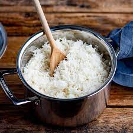

Recipe
Chicken Recipe
Ingredients:
- 4 boneless, skinless chicken breasts
- 2 tablespoons olive oil
- 1 teaspoon salt
- 1/2 teaspoon black pepper
- 1/2 teaspoon garlic powder
- 1/2 teaspoon paprika
- 1/2 teaspoon dried thyme
Instructions:
- Preheat your oven to 375°F (190°C).
- Place the chicken breasts on a baking sheet lined with parchment paper or foil.
- Drizzle the olive oil over the chicken breasts and rub them to coat evenly.
- In a small bowl, mix together the salt, pepper, garlic powder, paprika, and dried thyme.
- Sprinkle the seasoning mixture evenly over the chicken breasts, making sure to coat both sides.
- Bake in the preheated oven for 25-30 minutes or until the chicken is cooked through and no longer pink in the center (internal temperature of 165°F or 74°C).
- Remove from the oven and let the chicken rest for a few minutes before serving.
Enjoy your simple baked chicken!
Rice Recipe

Ingredients:
- 1 cup of rice
- 2 cups of water
- 1/2 teaspoon of salt (optional)
Instructions:
- Wash the rice thoroughly under cold running water until the water runs clear.
- Place the washed rice in a saucepan.
- Add 2 cups of water to the saucepan. You can also add a pinch of salt for flavor if desired.
- Place the saucepan on the stove over medium-high heat.
- Bring the water to a boil, then reduce the heat to low, cover the saucepan with a lid, and let it simmer for about 15-20 minutes or until the rice is tender and the water is absorbed.
- Remove the saucepan from heat and let it sit, covered, for about 5 minutes to allow the rice to steam.
- Fluff the rice with a fork, and it's ready to serve!
Enjoy your simple and delicious rice!